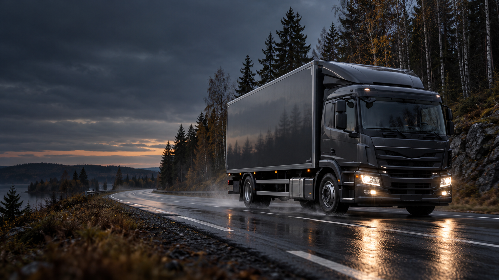

Tarpeesta toteutukseen.
Kerro mitä kuljetetaan, mistä minne ja milloin. Sovitaan kuljetuksen yksityiskohdat.

Pikakuljetukset ja teollisuuden kuljetuspalvelut.
Lohjalta Uudellemaalle.
Selkeä suunnitelma.
Noudosta määränpäähän.
Kerro mitä kuljetetaan, mistä minne ja milloin. Sovitaan kuljetuksen yksityiskohdat.
Pikakuljetus tai teollisuuden kuljetus. Toteutus tavaran, kohteen ja sovitun aikataulun mukaan.
Kuljetus sovittuun kohteeseen Uudellamaalla. Yksi yhteydenotto käynnistää suunnittelun.
Kun kuljetustarve on kiireellinen. Kerro nouto, määränpää ja aikataulu — selvitetään sopiva toteutus.
Kuljetuspalveluja teollisuuden tarpeisiin Uudellamaalla. Suunnitellaan siirto tavaran ja kohteen mukaan.
Paikallinen kuljetusliike, jonka lähtöpiste on Lohjalla. Pikakuljetuksia ja teollisuuden kuljetuspalveluja Uudenmaan alueella.
Kysy kuljetusta reitillesi ↗Kerrot reitin.
Suunnitellaan kuljetus.
Lohjalainen kuljetusliike.
Vuodesta 2019.
SE-FI-KA Kuljetus Oy tarjoaa pikakuljetuksia ja teollisuuden kuljetuspalveluja Uudellamaalla. Yrityksen aputoiminimi on Kuljetus Julle.
Kerro kuljetustarpeesi.
Sovitaan seuraava askel yhdessä.